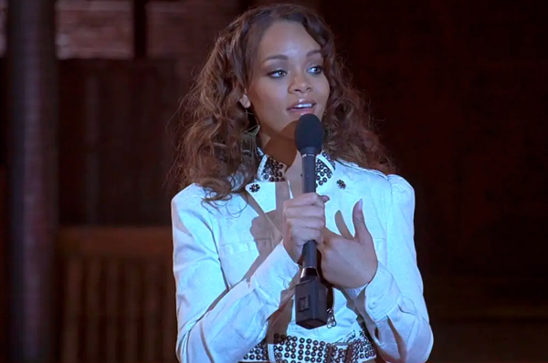
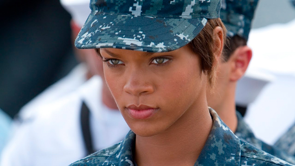
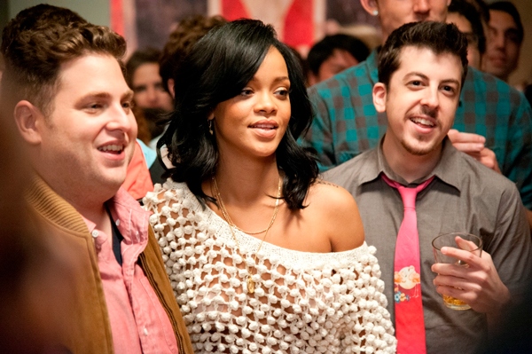
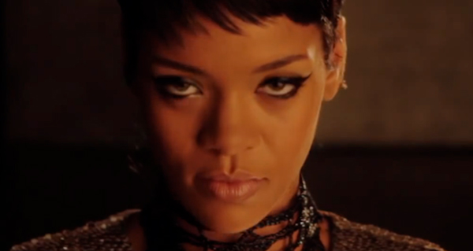
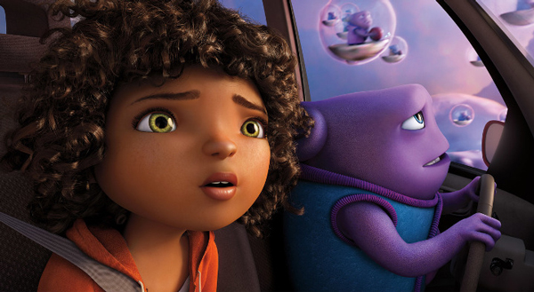
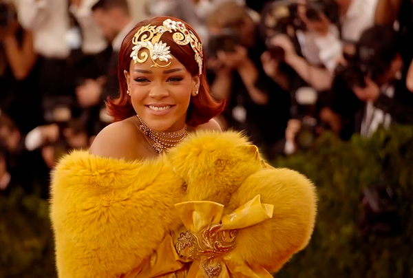
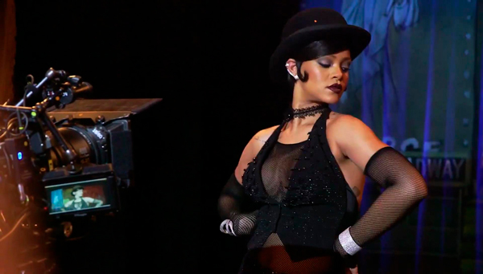
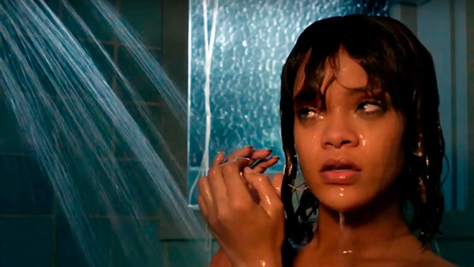
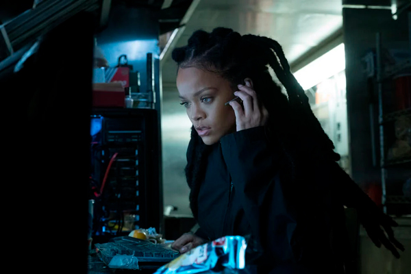
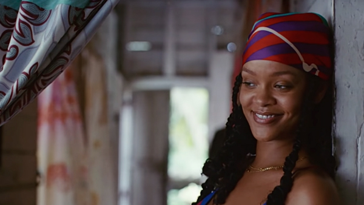

2006 - Bring It On: All Or Nothing

Solo un año después de su exitoso sencillo "Pon de Replay", Rihanna apareció en "All or Nothing" como ella misma: la ganadora de la competencia de porristas actuará con Rihanna y su escuela obtendrá nuevas computadoras.
2012 - Battleship

Rihanna protagoniza, junto a Liam Neeson, Alexander Skarsgard y Taylor Kitsh, "Battleship", adaptación cinematográfica del popular juego de mesa.
Interpreta a Cora Raikes, una suboficial y especialista en armas en el USS John Paul Jones.
2013 - This Is The End

Rihanna hace de ella misma en esta comedia cargada de humor, protagonizada por Seth Rogen, James Franco, Jay Baruchel, Emma Watson, Jonah Hill, Danny McBride y Craig Robinson. Este alucinante grupo de actores se interpretan a sí mismos en esta aventura apocalíptica sobre los sucesos catastróficos que suceden durante una fiesta en la ciudad de Los Ángeles y que anticipan el fin del mundo.
2014 - Annie

Rihanna hace un cameo como personaje dentro de una película en "Annie" llamada Moon Goddess, una especie de alien/monstruo.
2015 - Home

Esta película animada de comedia, basada en el libro infantil 'The True Meaning of Smekday', contó con las voces de distintas estrellas internacionales, entre ellas Rihanna, quién hace la voz de Tip, una joven de 13 años y uno de los personajes principales del film.
2016 - The First Monday In May

The First Monday In May es una película documental de 2016 dirigida por Andrew Rossi. La película sigue la creación de la exhibición de moda más concurrida en la historia del Museo Metropolitano de Arte: la exhibición de arte de 2015 China: Through the Looking Glass del curador Andrew Bolton en el MET de Nueva York. El documental narra el Met Gala en el que Rihanna usó ese icónico vestido amarillo de Guo Pei.
2017 - Valerian And The City Of A Thousand Planets

Rihanna interpreta a Bubble, una artista que cambia de forma en esta película distópica donde una fuerza oscura amenaza a Alpha, una vasta metrópolis y hogar de especies de mil planetas.
2017 - Bates Motel (Temporada 5, ep. 5 y 6)

En esta serie precuela de "Psicosis", Rihanna interpreta a Marion Crane, el icónico personaje que en el film original de Alfred Hitchcock muere en la ducha a manos de Norman Bates.
2018 - Ocean´s 8

Rihanna interpreta a una hacker, llamada Nine Ball en esta película de un grupo de estafadoras con un plan para robar un collar de diamantes de Cartier valorado en más de cien millones de dólares, durante la Met Gala de Nueva York.
2019 - Guava Island

Rihanna interpreta a Kofi junto a Donald Glover, quien interpreta a Deni en este musical donde un joven músico de la isla de Guava organiza un festival de música para unir a la clase trabajadora, ayudándolos a liberarse de sus oprimidas vidas.